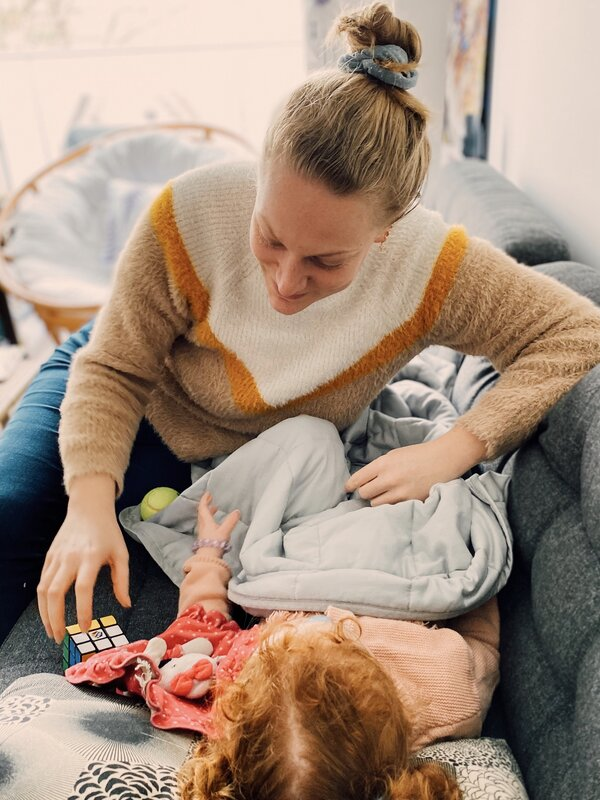

Séances de kinésiologie pour les humains
L'objectif est de travailler sur le rééquilibrage du corps grâce aux appositions des mains et aux tests musculaires, afin d'éliminer toutes les tensions (pour les grands mais aussi pour les plus petits, enfants et bébés).
Une séance dure environ une heure.
50 € la séance(ou plus si déplacement)